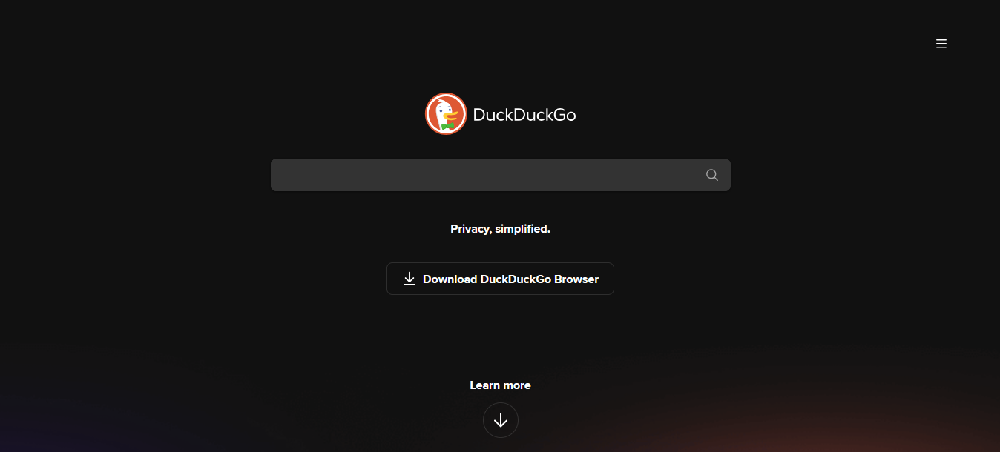
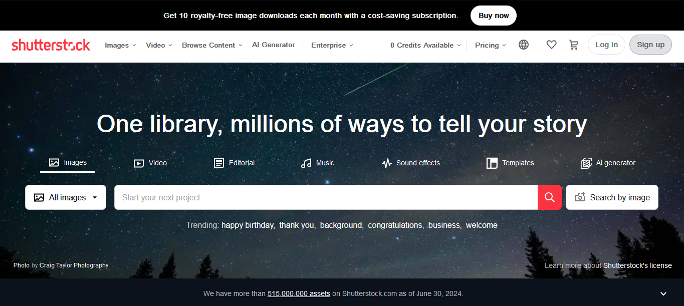
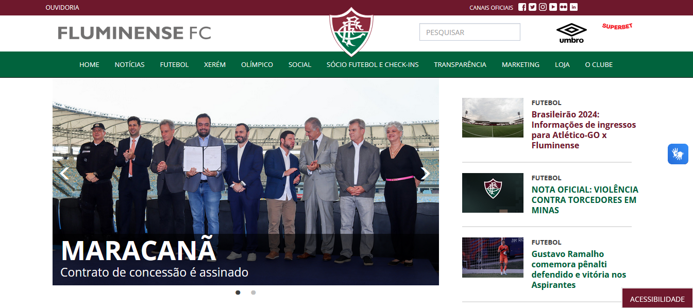

Hick's Law
Hick's Law states that the time it takes to make a decision increases with the number and complexity of choices. Websites that streamline choices demonstrate good application of Hick’s Law.
DuckDuckGo home page is an example with its design featuring just the search bar, making the decision-making process quick and straightforward.
Fitts's Law
Shutterstock (shutterstock.com)
Fitts's Law describes the relationship between the size of a target, its distance and the time it takes to reach it. This means that bigger buttons or links are easier to click, especially when they're placed in easy-to-reach areas like the corners or edges of the screen. Fitts' Law recommends making important elements larger and placing them in prominent, easy-to-access locations to improve user interaction.
Shutterstock utilizes large buttons in the center of the page, on the side and in the footer improving user interaction.
PARC: Alignment
Alignment creates a sharper and ordered appearance by ensuring that every item aligns with others along common edges or centers. Websites that exhibit clean, aligned content, such as the same horizontal or vertical lines, are using this principle effectively.
Fluminese site features a consistent alignment of text, images, and sections across the platform, creating a clean, professional look.